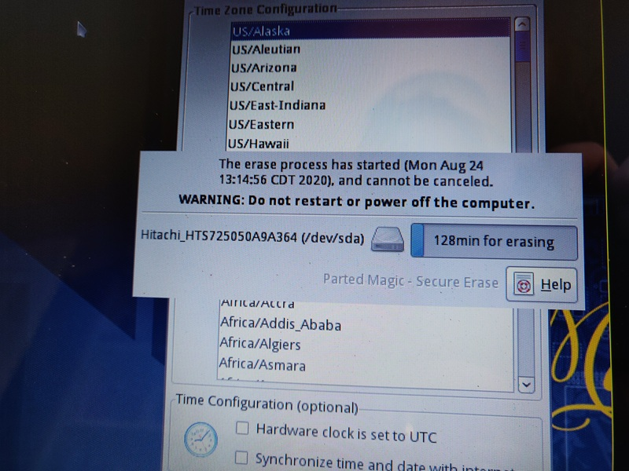
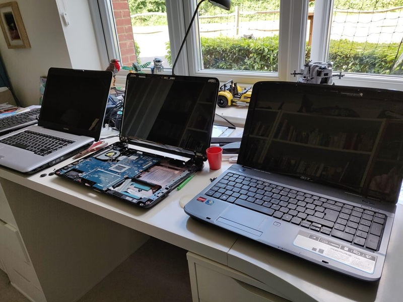
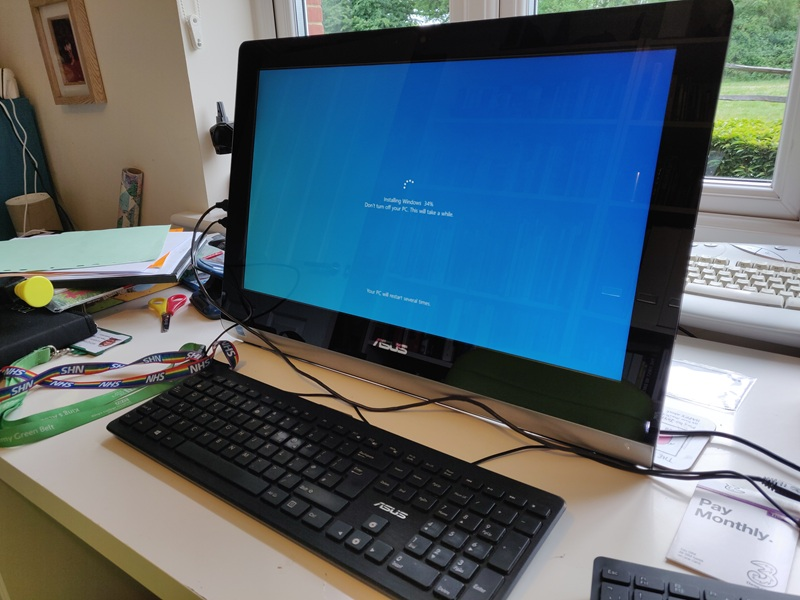
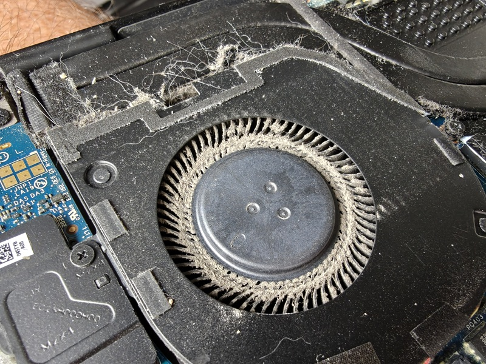

Our Process
Step 1 - Secure Wipe
All donated laptops have their data securely wiped as the first stage of the process. If the laptop includes a SATA hard disk or solid state disk (SSD), the ATA Secure Erase command is sent to the disk which completes a highly secure erase of all data according to the manufacturers best practice.
In the rare circumstances that the disk can't be wiped by software, the drive is physically damaged beyond repair by drilling several holes in the unit.
All donated laptops have their data securely wiped as the first stage of the process. If the laptop includes a SATA hard disk or solid state disk (SSD), the ATA Secure Erase command is sent to the disk which completes a highly secure erase of all data according to the manufacturers best practice.
In the rare circumstances that the disk can't be wiped by software, the drive is physically damaged beyond repair by drilling several holes in the unit.


Step 2 - Hardware checks and upgrades
Once the data has been securely wiped, the laptop is thoroughly checked for hardware defects. The battery, keyboard, USB ports, screen and webcam are checked, and repairs carried out if required and affordable.
Laptops then have their memory (RAM) increased to a minimum of 8GB, and a solid state disk (SSD) is installed to replace a traditional hard disk.
Any replaced items are recycled according to WEEE standards.
Once the data has been securely wiped, the laptop is thoroughly checked for hardware defects. The battery, keyboard, USB ports, screen and webcam are checked, and repairs carried out if required and affordable.
Laptops then have their memory (RAM) increased to a minimum of 8GB, and a solid state disk (SSD) is installed to replace a traditional hard disk.
Any replaced items are recycled according to WEEE standards.
Step 3 - Operating System
Next a fresh operating system is installed. If the laptop supports it, Microsoft Windows 11 is the default OS used. Older laptops have Google ChromeOS Flex installed. Laptops always have their drivers fully updated and installed so the laptop is ready to use straight away.
Next a fresh operating system is installed. If the laptop supports it, Microsoft Windows 11 is the default OS used. Older laptops have Google ChromeOS Flex installed. Laptops always have their drivers fully updated and installed so the laptop is ready to use straight away.


Step 4 - Cleaning
Finally the laptop is thoroughly cleaned ready for the new owner. Dust is blasted out using compressed air to ensure the laptop can cool itself adequately, and the laptop is hygienically cleaned using anti-bacterial and viral wipes.
To complete the process, the laptops details are logged and the laptop is stored ready for donation.
Finally the laptop is thoroughly cleaned ready for the new owner. Dust is blasted out using compressed air to ensure the laptop can cool itself adequately, and the laptop is hygienically cleaned using anti-bacterial and viral wipes.
To complete the process, the laptops details are logged and the laptop is stored ready for donation.
Follow us


© 2025 Level Up Laptop Appeal
Level Up Laptop appeal is a charitable project founded run by Martin Saunders in Horley, RH6 9JA.
Level Up Laptop appeal is a charitable project founded run by Martin Saunders in Horley, RH6 9JA.